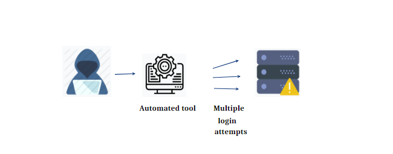
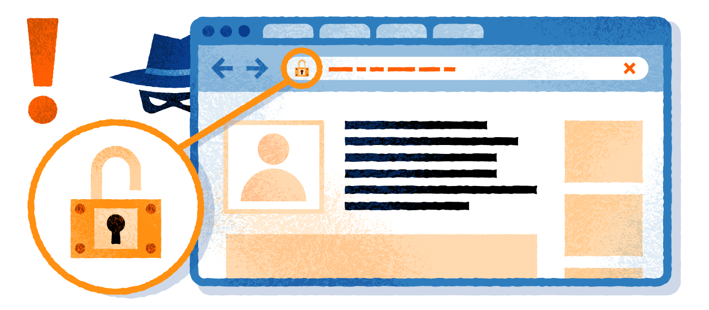

Cybersecurity
Here you will learn about some various threats to staying safe online. These threats can be very dangerous and some of them are able to find out personal details and cause a lot of trouble. The internet is a very dangerous place if you do not have a form of protection against these threats or are unaware of the breaches of your personal safety that can occur online.
Brute Force Attacks
A brute force attack is a trial-and-error method used to obtain information such as a user password or personal identification number (PIN). In a brute force attack, automated software is used to generate a large number of consecutive guesses as to the value of the desired data. Brute force attacks may be used by criminals to crack encrypted data, or by security analysts to test an organization's network security

DDoS
DDoS stands for Distributed Denial of Service and it is a type of computer attack that uses a number of hosts to overwhelm a server, causing a website to experience a complete system crash. This type of denial-of-service attack is perpetrated by hackers to target large-scale, far-reaching and popular websites in an effort to disable them, either temporarily or permanently. Flood attacks are often done by bombarding the targeted server with information requests, which disables the main system and prevents it from operating. Essentially, the targeted website is flooded with so much traffic or data that the site's users are left unable to access it.

Hacking
Hacking is the catch-all term for any type of misuse of a computer to break the security of another computing system to steal data, corrupt systems or files, commandeer the environment or disrupt data-related activities in any way.
Malware
Malicious software, commonly known as malware, is any software that brings harm to a computer system. Malware can be in the form of worms, viruses, trojans, spyware, adware and rootkits, etc.,
which steal protected data, delete documents or add software not approved by a user.
Pharming
Pharming refers to redirecting website traffic through hacking, whereby the hacker implements tools that redirect a search to a fake website.
Pharming may cause users to find themselves on an illegitimate website without realizing they have been redirected to an impostor site, which may look exactly like the real site.

Phishing
Phishing is a security exploit in which a perpetrator impersonates a legitimate business or reputable person in order to acquire private and sensitive information, such as credit card numbers,
personal identification numbers (PINs) and passwords.